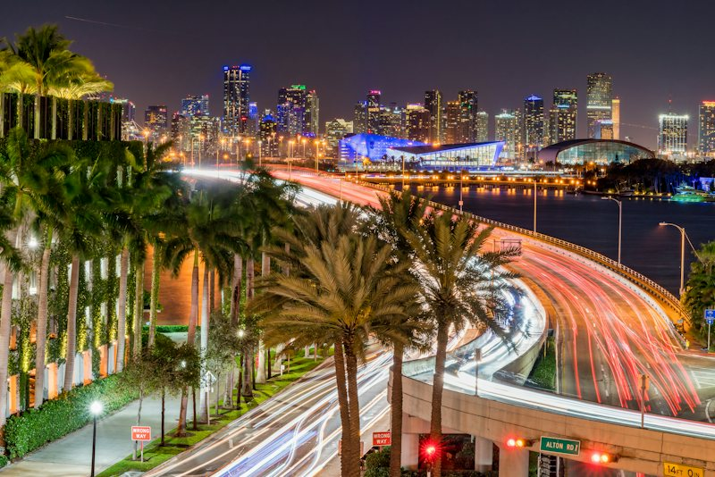
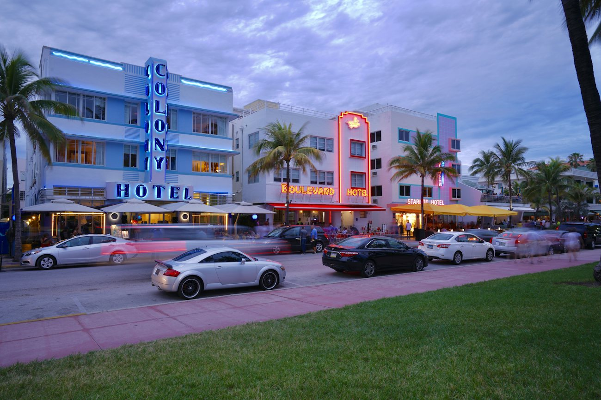
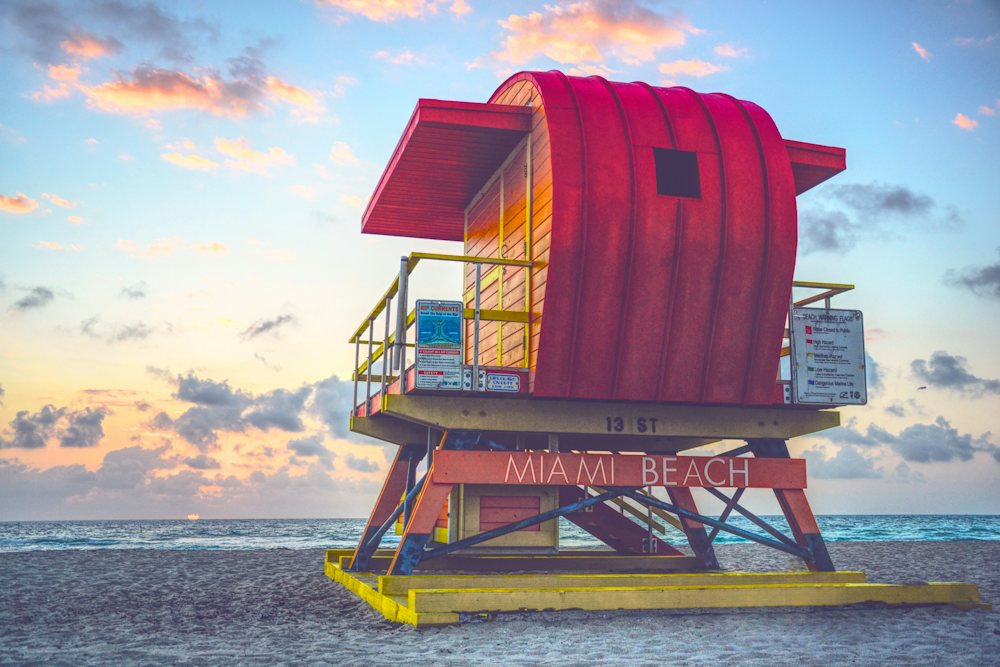
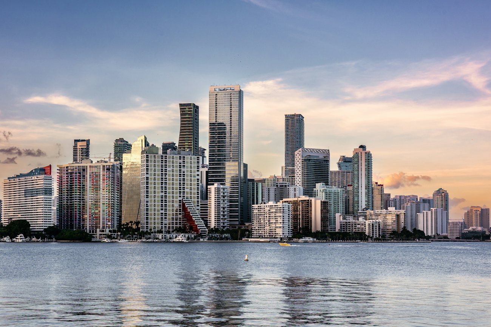
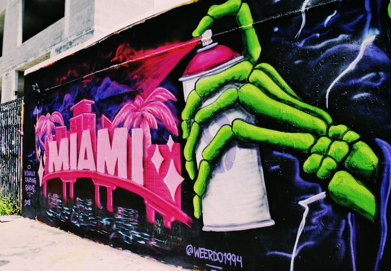
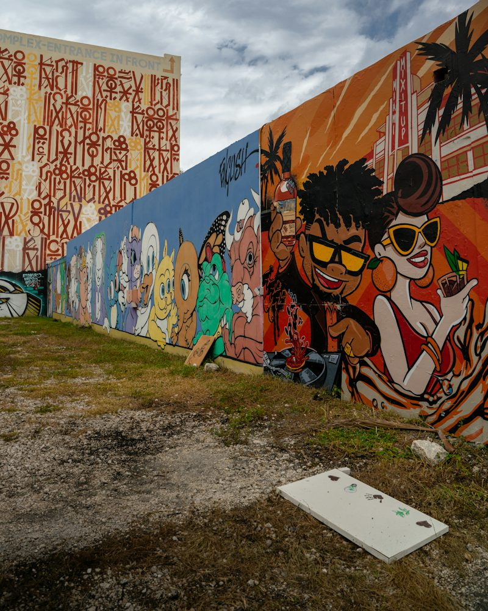
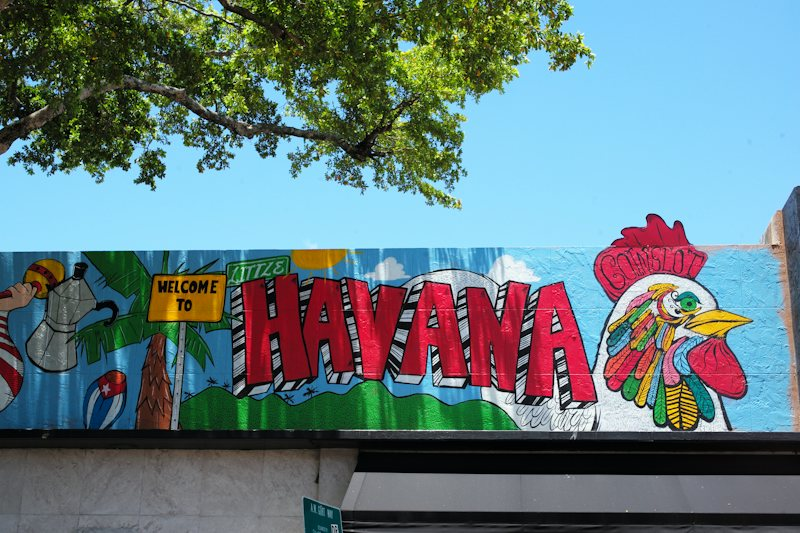

Private Jeep Convertible Tour
An open-top Jeep, your crew and a driver-guide running the full Miami loop, from the Ocean Drive neon to the Brickell skyline. The best-value private option on the map.

At a glance
- Duration
- 2.5 hours
- Group
- Up to 3
- Departs
- Your time
- Pickup
- Hotel or door pickup
Roof off, wind in. Your crew in an open-top Jeep with a driver-guide, running the full Miami loop from the Ocean Drive neon up to the Brickell skyline.
What's included
- Private driver-guide
- Open-top Jeep convertible
- Sunset photo stops
- Crew Souvenir Map + bandana
- Pickup anywhere in greater Miami
Best for
- Small crews
- Adventure lovers
- Great value private option
Itinerary

+0:001. Ocean Drive
Inspired · the neon hotel stripStart on Ocean Drive, where pastel Art Deco hotels, hand-painted neon and the Clevelander corner light up the night. Stand where the first trailer opened, then watch the strip come alive.

+0:252. Lummus Park Beach
Inspired · the beach scenesCandy-striped lifeguard towers, white sand and Atlantic surf. The crew photo stop: everyone lines up by the tower, and everyone sends it to someone.
 +0:40
+0:403. Venetian Causeway
Inspired · the causeway driveCross the bay on the old Venetian Causeway, the skyline climbing ahead of you. Eyes out of the window for this one.

+0:554. Downtown & Biscayne Blvd
Inspired · the arena and the clubThe waterfront arena, a crown of changing light on the tallest tower, and the 24-hour superclub straight out of the second trailer.

+1:105. Wynwood
Inspired · the arts districtA 25-minute walk through Wynwood’s murals, galleries and warehouse streets. The walls change every month, so no two crews ever get the same backdrop.

+1:406. Little Haiti
Inspired · the Caribbean quarterBright murals, loud color and patties from the counter at the cultural complex. The stop nobody expects to love most.

+2:107. Little Havana
Inspired · Calle OchoCafecito and a pastelito at a ventanita, then dominoes at Máximo Gómez Park. Slow down here: this is the part of Miami you will still be talking about on the flight home.
- +2:35
8. Brickell
Inspired · the skyline shotsGlass towers stacked to the sky in Brickell, then back over the MacArthur Causeway past the cruise ships at PortMiami and home to the neon on Ocean Drive.
Questions about this tour
How is the Jeep tour different from the classic car?
Same private route and guide, in an open-top Jeep instead of a vintage convertible, for $450 per Jeep.
How long does it take?
About 2.5 hours, with pickup from your hotel anywhere in the greater Miami area.
Is this an official game tour?
No. Leonida Tours is an independent South Florida tour company running unofficial tours. We take you IRL to the real places that inspired the game's world. We are not affiliated with, endorsed or sponsored by any game publisher.
What does reserving mean?
Reserving holds your spot with no prepayment needed. We confirm your date with you personally before public booking opens, and you get 20% off your first tour.
How does the City Pass work?
One pass covers the Miami Vice City small-group tour, the boat tour and the Grasslands airboat. Book each date whenever you like during your stay.
Reserve now. Ride first.
Tell us your date and group size and we'll confirm your spot before public booking opens, plus 20% off your first tour.
Reserve Private Jeep Convertible Tour